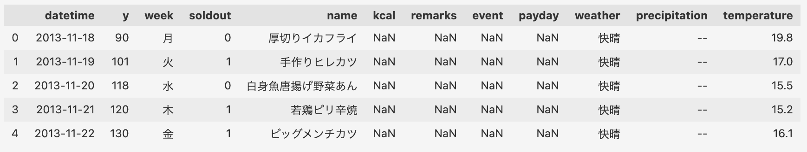
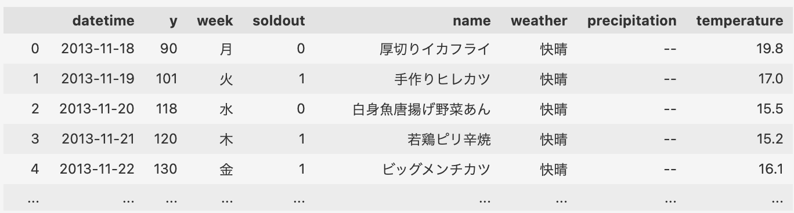
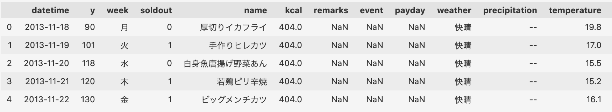
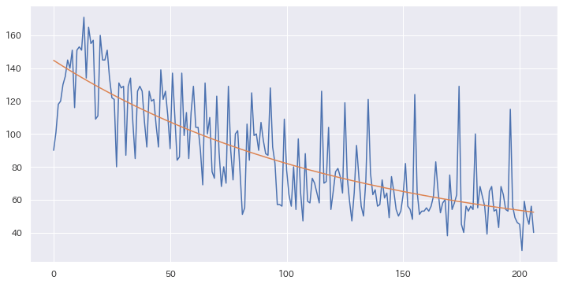

コースワーク２：お弁当の販売予測#
カフェフロアで販売されているお弁当の販売数のデータから
販売数yを予測する回帰モデルを作ろう。
SIGNATE社のコンテスト用データを利用させていただきます。 SIGNATEにユーザ登録すると、ダウンロードすることができます。 （データの入手法の詳細は授業中にも紹介します。）
| 属性 | 説明 |
|---|---|
| datetid | インデックスとして使用する日付 |
| y | 販売数 |
| week | 曜日（月～金） |
| soldout | 完売フラグ（0:完売せず、1:完売） |
| name | メインメニュー |
| kcal | おかずのカロリー（kcal） |
| remarks | 特記事項 |
| event | 社内イベント |
| payday | 給料日フラグ（1:給料日） |
| weather | 天気 |
| precipitation | 降水量 |
| temperature | 気温 |
スタート地点#
まず、訓練データを読み込んでみましょう。
データフレームを確認すると、最初に目につくのは、NaN です。 これが今回のポイントです。
ポイント： 欠損値の処理#
NaN とは、欠損値、つまりデータの記載がなくて欠けていることを表します。
df.info()で見ると、より欠損値の状況がわかります。
RangeIndex: 207 entries, 0 to 206
Data columns (total 12 columns):
# Column Non-Null Count Dtype
--- ------ -------------- -----
0 datetime 207 non-null object
1 y 207 non-null int64
2 week 207 non-null object
3 soldout 207 non-null int64
4 name 207 non-null object
5 kcal 166 non-null float64
6 remarks 21 non-null object
7 event 14 non-null object
8 payday 10 non-null float64
9 weather 207 non-null object
10 precipitation 207 non-null object
11 temperature 207 non-null float64
dtypes: float64(3), int64(2), object(7)
memory usage: 19.5+ KB
kcal, remarks, event, paydayは欠損しています。
欠損しているカラムをそのまま、モデルの説明変数に用いると、エラーになるので、
欠損値を処理する必要があります。
欠損値
データセットには、（意地悪とかではなく頻繁に色々な理由から）データが欠損することがあります。 データの欠損値を取り除いて、もしくは補完して高い精度のモデルを作るのが腕の見せ所です。
シンプルな対処法#
最もシンプルな対処法は、欠損値のあるカラムを削除してしまうことです。
しかし、このようにカラムごと消してしまうと、説明変数に使えるデータが少なくなってしまいます。
あまりおすすめではありません。(特に、kcalが使えないのは惜しい)
NaNを補間する#
kcalカラムの要約統計量を見て見ましょう。
count 166.000000
mean 404.409639
std 29.884641
min 315.000000
25% 386.000000
50% 408.500000
75% 426.000000
max 462.000000
Name: kcal, dtype: float64
あまり、大きなばらつきがないことに気づきませんか？ このような場合は、消してしまうよりも、平均値で補完してしまうこともできます。
給料日paydayのNaNは、フラグが立っていないだけなので、NaNを0にします。
eventやremarksのNaNも、'なし'や'特になし'にしておきましょう。
df['payday'] = df['payday'].fillna(0)
df['event'] = df['event'].fillna('なし')
df['remarks'] = df['remarks'].fillna('特になし')
df.head()
これで、欠損値はなくなりました。
<class 'pandas.core.frame.DataFrame'>
RangeIndex: 207 entries, 0 to 206
Data columns (total 12 columns):
# Column Non-Null Count Dtype
--- ------ -------------- -----
0 datetime 207 non-null object
1 y 207 non-null int64
2 week 207 non-null object
3 soldout 207 non-null int64
4 name 207 non-null object
5 kcal 207 non-null float64
6 remarks 207 non-null object
7 event 207 non-null object
8 payday 207 non-null float64
9 weather 207 non-null object
10 precipitation 207 non-null object
11 temperature 207 non-null float64
dtypes: float64(3), int64(2), object(7)
memory usage: 19.5+ KB
もし余力があれば、文字列で表現されたカテゴリデータにも注目して見ましょう。
中級向け: カテゴリーデータの数値化⭐️#
データセットには、object型で示されるカテゴリーデータが入っています。
カテゴリーデータは、このままでは説明変数に用いることはできませんが、
お弁当の販売に有益な情報が含まれているかも知れません。
そこで、数値データに変換することを考えてみます。
- 手作業で数値に変換する
- One-Hot ベクトル（ダミー変数）に変換する
- Medean-Encodingする
例で、weatherカラムに着目します。
カテゴリーデータを数値化する方法はいくつかあります。
手作業のスコア化: 一番簡単なのは、手作業でスコア付けしてしまう方法です。
OneHotベクトル化: 定番です。（ダミー変数化とも言います。）
df_weather = pd.get_dummies(df['weather'], dummy_na=False, columns=['weather'])
df_weather.head()
Medianエンコーディング: データサイエンス上級者がよく使うのが目的変数の中央値を採用する方法です。
とりあえず、次元数は多くなりますが、OneHotエンコーディングを練習してみるのは良いですね。
中級向け: メニュー名のベクトル化⭐️#
お客さんは、メニューを見てお弁当を買うわけなので、 メニュー名は販売に大きな影響を与えます。 というわけで、メニュー名を説明変数として使えるようにベクトル化してしまいます。
混乱しない人だけ読んでね
原則、自然言語処理と言われる方法を使うことになります
メニュー名をベクトル化する方法も色々あります。
数物情報科学科の３年生が原理を既に習っているはずの 形態素解析とTF/IDFを使う方法を紹介します。
Python版の形態素解析ライブラリ janomeを使って、分かち書きをします。
from janome.tokenizer import Tokenizer
nlp = Tokenizer()
def wakachi(s):
return ' '.join([w.surface for w in nlp.tokenize(s)])
分かち書きというは、英語のように、単語間に空白を入れる処理です。
TF/IDFでベクトルモデルを作ります。
from sklearn.feature_extraction.text import TfidfVectorizer
model = TfidfVectorizer(use_idf=True)
vec = model.fit_transform(words)
df_name = pd.DataFrame(vec.toarray(), columns=model.get_feature_names_out(), index=words)
df_name.head()
(上級者向け） トレンド解析を加える#
今回のお弁当屋さんの解析は、売り上げをグラフで図示すると、少し売り上げが落ちているトレンドが見えます。

XGBoost と LightGBM#
勾配ブーストを用いた決定木(GBDT)によるクラス分類や回帰はデータ分析コンペでも非常によく使われています。
https://arxiv.org/abs/1603.02754
ぜひ、Webで調べながら威力を試してみてください。